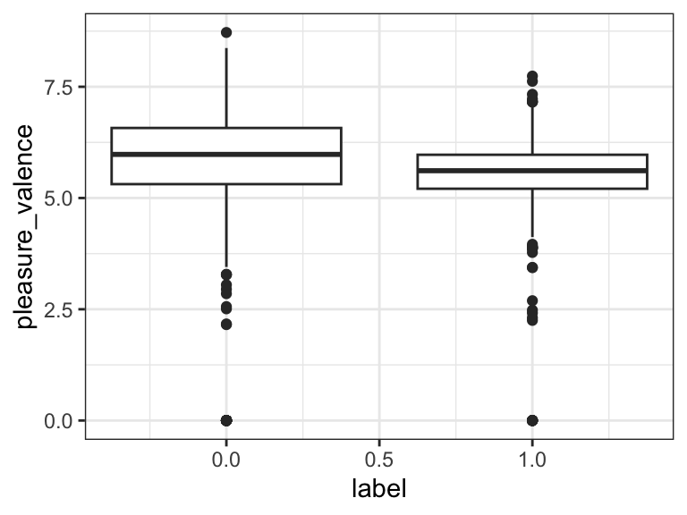
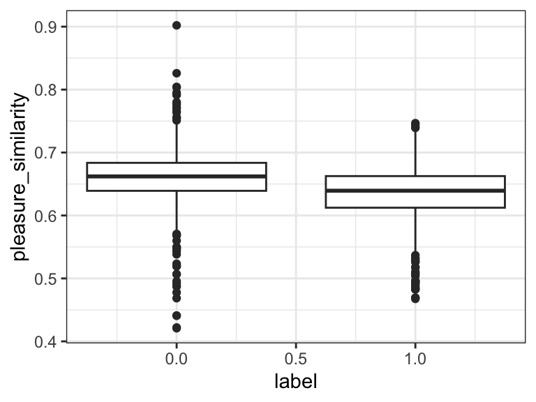
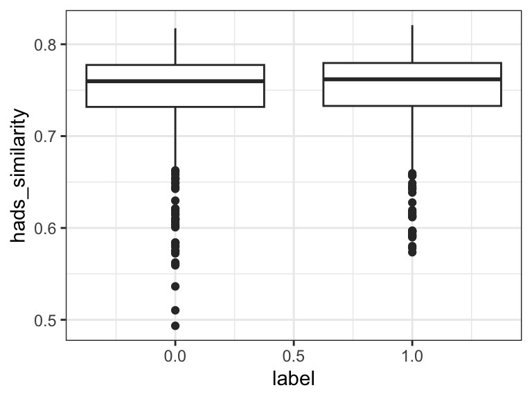
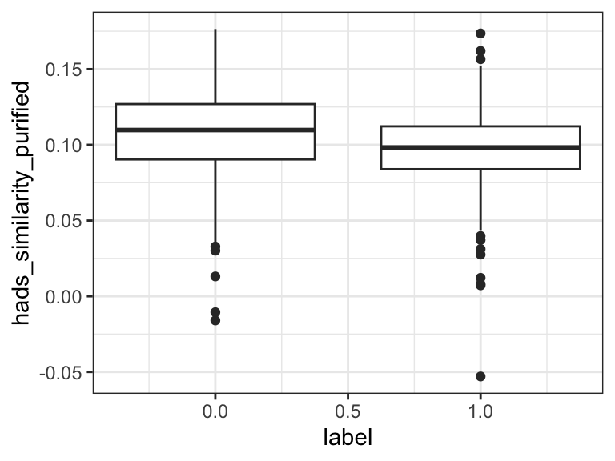

# Mental Health dataset -> Sample 500 documents from each category (without replacement)
d <- read_csv('mental_health.csv') %>%
group_by(label) %>%
slice_sample(n = 500, replace = FALSE) %>%
ungroup() %>%
# add docID
mutate(ID = as.character(1:n()))
# No preprocessing required, since texts are already lowercase and without punctuation
head(d)
# Convert to quanteda corpus object
d_corpus <- corpus(d, docid_field = "ID", text_field = "text")Comparing Four Methods of Sentiment Analysis
R
NLP
Sentiment Analysis
Acknowledgement
Thank you Almog for a well-organized and scholarly introduction to this topic.
Sentiment analysis refers to the use of computational methods to extract emotional (or otherwise subjective) content from text. We ask: How happy is this text? Or: How anxious is this text?
Many different methods for sentiment analysis exist, and the recent rise of large language models has opened the door to even more. This post will compare four methods: word-counts, distributed dictionary representation (DDR), and two methods of contextualized construct representation (CCR).
I will pit these methods against each other at a simple classification task: identifying depressive/anxious (“poisonous”) comments in the Mental Health Corpus.
1. Word counts - Valence-based sentiment analysis
This method takes an existing dictionary of words, each given a score on the extent to which it reflects a particular emotional category. I will use the “pleasure” category of the Affective Norms for English Words (ANEW) dictionary, included in quanteda.sentiment.
This method is simple and elegant: get the “pleasure” score of each word and compute the average for each comment in the dataset.
# A Peak at the Dictionary
print(data_dictionary_ANEW, max_nval = 8)Dictionary object with 3 key entries.
Valences set for keys: pleasure, arousal, dominance
- [pleasure]:
- abduction, able, abortion, absent, absurd, abundance, abuse, accept [ ... and 2,463 more ]
- [arousal]:
- abduction, able, abortion, absent, absurd, abundance, abuse, accept [ ... and 2,463 more ]
- [dominance]:
- abduction, able, abortion, absent, absurd, abundance, abuse, accept [ ... and 2,463 more ]lapply(valence(data_dictionary_ANEW), head, 8)$pleasure
abduction able abortion absent absurd abundance abuse accept
2.76 6.74 3.50 3.69 4.26 6.59 1.80 6.80
$arousal
abduction able abortion absent absurd abundance abuse accept
5.53 4.30 5.39 4.73 4.36 5.51 6.83 5.53
$dominance
abduction able abortion absent absurd abundance abuse accept
3.49 6.83 4.59 4.35 4.73 5.80 3.69 5.41 # Compute sentiment for each document and rejoin to original dataframe
d <- d_corpus %>%
textstat_valence(dictionary = data_dictionary_ANEW["pleasure"]) %>%
rename(ID = doc_id, pleasure_valence = sentiment) %>%
right_join(d)Joining with `by = join_by(ID, pleasure_valence)`2. Distributed Dictionary Representations (DDR) - Embeddings of word lists
This method is similar to the last one, but instead of just averaging the pleasure scores in each comment, I will run both the dictionary words and the full comments through a cutting-edge large language model, and extract the model’s internal embedding of the input (basically, how the model thinks about the text). Then I can see how similar each comment embedding is to the average embedding of “pleasure” items in the dictionary.
For consistency, I’ll use the same dictionary here too, with embeddings from the second to last layer of BERT (base uncased) using the text package. I’ll get contextualized embeddings of the documents, and decontextualized embeddings for the words in the dictionary. I’ll the compute the embedding of the full dictionary as a weighted average of its embeddings by standardized valence. Finally, I will compute cosine similarity between each document embedding in the corpus and this dictionary embedding.
# Embeddings for documents
d_embeddings <- textEmbed(d$text)
# Embeddings for words in the Dictionary
dict_embeddings <- textEmbed(names(valence(data_dictionary_ANEW)[[1]]))
dict_embeddings <- dict_embeddings$texts[[1]] %>%
mutate(ID = 1:n())
# center valence, remove negative values, join to embeddings, and find weighted average
dict_avg_embedding <- valence(data_dictionary_ANEW)[[1]] %>% enframe() %>%
mutate(weight = value - mean(value, na.rm = TRUE),
ID = 1:n()) %>%
filter(weight < 0) %>%
left_join(dict_embeddings, by = "ID") %>%
summarise(across(Dim1_texts:Dim768_texts, ~weighted.mean(.x, weight))) %>%
unlist(use.names=FALSE)
# cosine similarity of each text to dictionary average embedding
d$pleasure_similarity <- NA
for (row in 1:nrow(d_embeddings$texts[[1]])) {
doc_embedding <- slice(d_embeddings$texts[[1]], row) %>%
unlist(use.names = FALSE)
d$pleasure_similarity[row] <- lsa::cosine(doc_embedding, dict_avg_embedding)
}3. Contextualized Construct Representation (CCR) - Embeddings of questionnaires
This method uses the same large language model embeddings from the last one. Now though, rather than comparing comment embeddings to the average embedding of a dictionary, I will compare them to the average embedding of an experimentally validated psychological questionnaire. Here I will use the Hospital Anxiety And Depression Scale (HADS; Snaith, 2003), treating anxiety and depression as a single construct. Positively-coded items will be left as-is, and negatively coded ones will be negated (e.g. “i feel tense or wound up” -> “i do not feel tense or wound up”).
Remember that BERT is trained to predict upcoming words. So you can think of what I’m measuring here as: Are the the person who would write the kind of statement in the questionnaire and the person who would write this comment likely to say similar sorts of things afterward?
hads_items <- c(
"i still enjoy the things i used to enjoy",
"i can laugh and see the funny side of things",
"i look forward with enjoyment to things",
"i feel cheerful",
"i can sit at ease and feel relaxed",
"i can enjoy a good book or radio or tv program",
"i do not feel tense or wound up",
"i do not feel as if i am slowed down",
"i do not get a sort of frightened feeling like butterflies in the stomach",
"i do not get a sort of frightened feeling as if something awful is about to happen",
"i have not lost interest in my appearance",
"i do not feel restless as I have to be on the move",
"worrying thoughts do not go through my mind",
"i do not get sudden feelings of panic"
)
hads_embedding <- textEmbed(hads_items)
# Mean Embedding
hads_avg_embedding <- hads_embedding$texts[[1]] %>%
summarise(across(Dim1_texts:Dim768_texts, mean)) %>%
unlist(use.names=FALSE)
# cosine similarity of each text to HADS average embedding
d$hads_similarity <- NA
for (row in 1:nrow(d_embeddings$texts[[1]])) {
doc_embedding <- slice(d_embeddings$texts[[1]], row) %>%
unlist(use.names = FALSE)
d$hads_similarity[row] <- lsa::cosine(doc_embedding, hads_avg_embedding)
}4. CCR, Corrected for Questionaire-ness.
One possible problem with the last method is that there’s a difference between agreeing with statements in a questionnaire and actually writing like a questionnaire. How do I know that I’m measuring how anxious/depressed the comments are and not how questionnaire-y they are? This problem can be remedied with the magic of vector embeddings: I will reverse all of the statements in the questionnaire (just like I did for reverse-coded items before), add them to the original questionnaire, and get the average embedding of this anxiety- and depression-neutral questionnaire. Then I will subtract this embedding from the questionnaire average embedding I computed for the last method, yielding (hopefully) an embedding of pure depression and anxiety, with all the questionnaire-ness sucked out of it.
hads_items_reversed <- c(
"i do not still enjoy the things i used to enjoy",
"i cannot laugh and see the funny side of things",
"i do not look forward with enjoyment to things",
"i do not feel cheerful",
"i cannot sit at ease and feel relaxed",
"i cannot enjoy a good book or radio or tv program",
"i feel tense or wound up",
"i feel as if i am slowed down",
"i get a sort of frightened feeling like butterflies in the stomach",
"i get a sort of frightened feeling as if something awful is about to happen",
"i have lost interest in my appearance",
"i feel restless as I have to be on the move",
"worrying thoughts go through my mind",
"i get sudden feelings of panic"
)
hads_embedding_reversed <- textEmbed(hads_items_reversed)
# Mean Embedding of Negated Questionnaire
hads_avg_embedding_reversed <- hads_embedding_reversed$texts[[1]] %>%
summarise(across(Dim1_texts:Dim768_texts, mean)) %>%
unlist(use.names=FALSE)
# Mean Embedding of Neutralized Questionnaire
questionnaireness_avg_embedding <- (hads_avg_embedding + hads_avg_embedding_reversed)/2
# Subtract from initial
hads_avg_embedding_purified <- hads_avg_embedding - questionnaireness_avg_embedding
# cosine similarity of each text to HADS average embedding
d$hads_similarity_purified <- NA
for (row in 1:nrow(d_embeddings$texts[[1]])) {
doc_embedding <- slice(d_embeddings$texts[[1]], row) %>%
unlist(use.names = FALSE)
d$hads_similarity_purified[row] <- lsa::cosine(doc_embedding, hads_avg_embedding_purified)
}T-tests and Effect Sizes
Time to see how each method did! Rather than running inference, I’ll stick with simple standardized effect sizes measuring the difference between “poisonous” and “non-poisonous” comments in terms of the four metrics computed above. Whichever method produces the largest effect size wins!
# Sentiment Analysis
t.test(d$pleasure_valence, d$label)
Welch Two Sample t-test
data: d$pleasure_valence and d$label
t = 108.32, df = 1252.8, p-value < 2.2e-16
alternative hypothesis: true difference in means is not equal to 0
95 percent confidence interval:
4.974908 5.158443
sample estimates:
mean of x mean of y
5.566675 0.500000 cohens_d(pleasure_valence ~ label, data = d) # 0.11Cohen's d | 95% CI
-------------------------
0.11 | [-0.02, 0.23]
- Estimated using pooled SD.ggplot(d, aes(label, pleasure_valence, group = label)) +
geom_boxplot() +
theme_bw()
# DDR
t.test(d$pleasure_similarity, d$label)
Welch Two Sample t-test
data: d$pleasure_similarity and d$label
t = 9.1938, df = 1021.5, p-value < 2.2e-16
alternative hypothesis: true difference in means is not equal to 0
95 percent confidence interval:
0.1150409 0.1774743
sample estimates:
mean of x mean of y
0.6462576 0.5000000 cohens_d(pleasure_similarity ~ label, data = d) # 0.49Cohen's d | 95% CI
------------------------
0.49 | [0.37, 0.62]
- Estimated using pooled SD.ggplot(d, aes(label, pleasure_similarity, group = label)) +
geom_boxplot() +
theme_bw()
# CCR
t.test(d$hads_similarity, d$label)
Welch Two Sample t-test
data: d$hads_similarity and d$label
t = 15.626, df = 1017.3, p-value < 2.2e-16
alternative hypothesis: true difference in means is not equal to 0
95 percent confidence interval:
0.2171395 0.2795070
sample estimates:
mean of x mean of y
0.7483233 0.5000000 cohens_d(hads_similarity ~ label, data = d) # -0.10Cohen's d | 95% CI
-------------------------
-0.10 | [-0.22, 0.02]
- Estimated using pooled SD.ggplot(d, aes(label, hads_similarity, group = label)) +
geom_boxplot() +
theme_bw()
# CCR corrected
t.test(d$hads_similarity_purified, d$label)
Welch Two Sample t-test
data: d$hads_similarity_purified and d$label
t = -25.085, df = 1004.6, p-value < 2.2e-16
alternative hypothesis: true difference in means is not equal to 0
95 percent confidence interval:
-0.4284731 -0.3663013
sample estimates:
mean of x mean of y
0.1026128 0.5000000 cohens_d(hads_similarity_purified ~ label, data = d) # 0.43Cohen's d | 95% CI
------------------------
0.43 | [0.31, 0.56]
- Estimated using pooled SD.ggplot(d, aes(label, hads_similarity_purified, group = label)) +
geom_boxplot() +
theme_bw()
The results are in! Traditional sentiment analysis worked all right (d = 0.11), but DDR was much better (d = 0.49). Plain CCR was actually worse than nothing - it identified poisonous comments as less depressed and anxious! This might be because it was measuring questionnaire-ness instead of depression/anxiety. It does make sense that non-poisonous texts sound a bit more like psychiatric questionnaires than poisonous ones do. Indeed, the corrected CCR did much better - almost as good as DDR.
This was not quite a fair match, since the dictionary used for DDR was much larger than the questionnaire used for CCR. With a longer depression/anxiety questionnaire, the corrected CCR method might surpass DDR.
The moral of the story: Always think twice about what exactly you are measuring. Even if you carefully designed the method to measure one thing, you just might be measuring something else entirely.